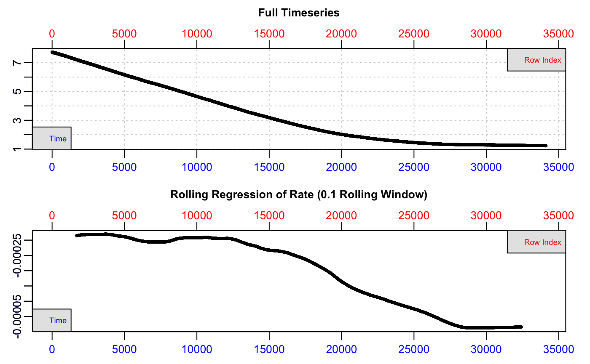
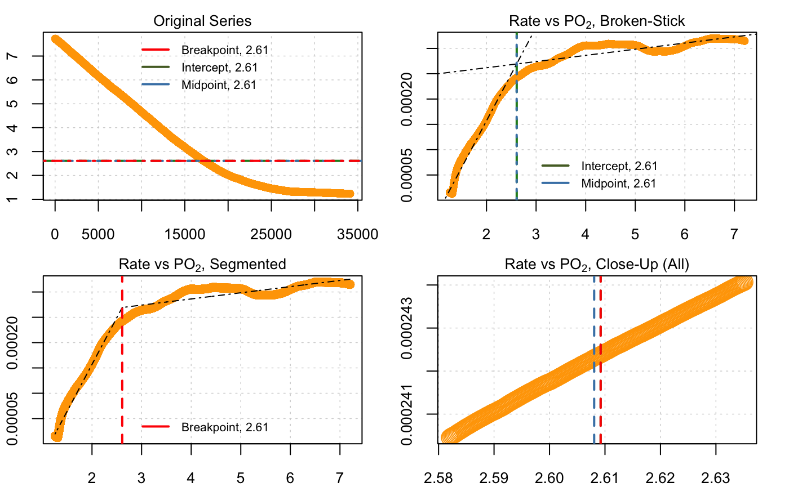
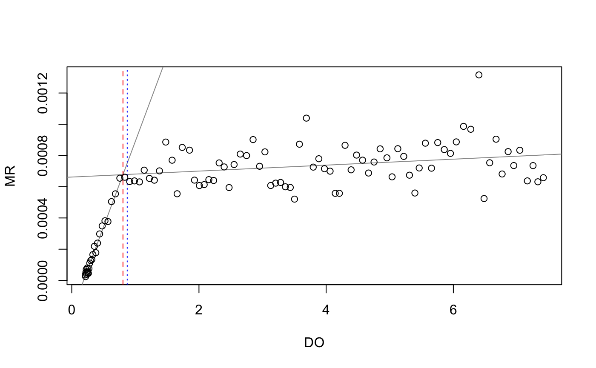
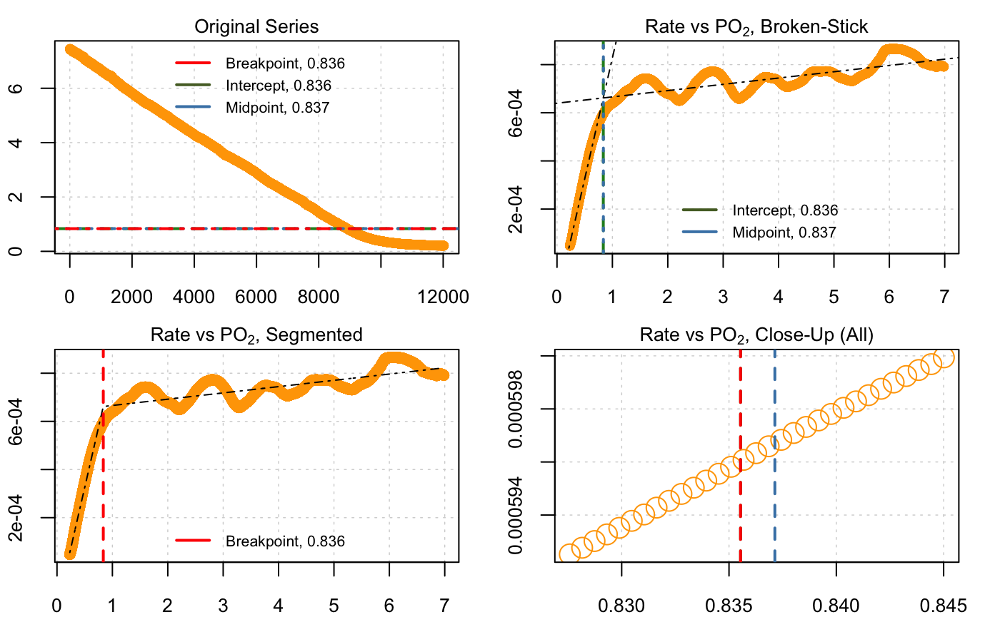

In some species (oxyconformers) routine oxygen uptake rate is directly proportional to oxygen concentration. So, for example, at 50% O2, the uptake rate will be half that at 100% O2. Many species however (oxyregulators) are able to regulate uptake and maintain routine rates as oxygen decreases. Note however, there is a continuum of responses between these extremes, and intermediate cases (Mueller and Seymour, 2011).
The concentration below which routine uptake becomes unsustainable is termed the critical partial pressure of O2, or \(P_{crit}\). Historically, this was expressed in units of partical pressure of oxygen, but more recently it is also commonly expressed in units of concentration.
\(P_{crit}\) is typically determined in long term, closed respirometry experiments in which the specimen is allowed to deplete the oxygen in the chamber to hypoxia, and the resulting oxygen trace is used to identify the breakpoint in the relationship of uptake rate to O2 concentration.
The example data, squid.rd, contains data from a long term experiment in the market squid, Doryteuthis opalescens. Detailed information about the data, including its source and methods, can be obtained with the command ?squid.rd. This dataset is extremely large; over 34000 rows representing 9.5h of data. However the functions in respR are highly optimised and efficient, so only users on older machines should experience any delay waiting for code to complete.
head(squid.rd)
#> Time o2
#> 1 0 7.726446
#> 2 1 7.726446
#> 3 2 7.726446
#> 4 3 7.726446
#> 5 4 7.726446
#> 6 5 7.726446We can examine the dataset using the inspect_data function.
market.squid <- inspect(squid.rd)
#> No issues detected while inspecting data frame.
We can see from the bottom plot, a rolling rate across 10% of the total data, that the uptake rate is relatively consistent to around row 12,000, after which it declines steadily. We cannot tell from this plot which O2 concentration this represents. For now, we can see the dataset is free of errors or issues, so we can pass the saved market.squid object to the dedicated pcrit() function.
The pcrit() function provides three methods to report the breakpoint in the rate ~ O2 relationship.
The first two are from the “broken-stick” regression (BSR) approach, adapted from Yeager & Ultsch (1989) in which two segments of the data are iteratively fitted and the intersection with the smallest sum of the residual sum of squares between the two linear models is the estimated critical point. Two slightly different ways of reporting this breakpoint are detailed by Yeager & Ultsch (1989); the intercept and midpoint. These are usually close in value.
The third method in the pcrit() function is a wrapper for the “segmented regression”" approach, available as part of the segmented R package (Muggeo 2008), which estimates the critical point by iteratively fitting two intersecting models and selecting the point that minimises the “gap” between the fitted lines.
Note that at present, pcrit does not accept inpect or inspect_data objects, but we can easily call the data frame within these directly:
market.squid.pcrit <- pcrit(market.squid$df)#> Performing broken-stick analysis...
#> Performing segmented (breakpoint) analysis...
#> Convergence attained in 1 iterations.
print(market.squid.pcrit)#> --Broken stick (Yeager & Ultsch 1989)--
#> Sum RSS 1.2689e-07
#> Intercept 2.60922
#> Midpoint 2.60805
#>
#> --Segmented (Muggeo 2003)--
#> Std. Err. 0.00995977
#> Breakpoint 2.60922The output figure shows all three metrics plotted against the original data and on rate ~ O2 plots. The print() summary shows that, in this case, all three methods give very similar values for the \(P_{crit}\): 2.61, 2.61 and 2.62 mg L-1. We should note that for some data, depending on various characteristics, such as noise, abruptness of the break, etc., the different methods may provide different results. See the later section for some general discussion of the different methods.
Note, that the pcrit function has a width input, which controls the width of the rolling regressions used to calculate the rolling rate values. This necessarily affects estimations of the \(P_{crit}\). The default value of 0.1 of the total length of data in our testing seems to provide good results, but in some data changing this may give better results.
Also important to note is that the segmented (Muggeo) method sometimes gives a different result when the exact same code is run. See the documentation for the segmented package and publications by Muggeo for the details of why this is, but briefly, it comes from a randomisation of the starting point for the initial analysis. The differences introduced by this are usually minor.
The pcrit() function also includes a default parallel = TRUE argument. This instructs the function to use parallel processing to speed up the analysis, if your system supports it. In the case of errors or problems using the function, changing this to FALSE is a good first step in diagnosing the problem.
The example above used raw Time ~ O2 data, and so the function calculated a rolling rate internally. However, the function can accept already calculated rate ~ O2 data using the argument has.rate = TRUE, and the function will determine \(P_{crit}\) using these data directly. These data can be either whole specimen rates (\(\dot{V}O_2\)), or mass-specific rates (\(\dot{M}O_2\)); both give identical results.
Note, the pcrit() function does not support adjusting rates for background effects. Background O2 uptake should not affect \(P_{crit}\) as it is typically minimal and assumed to be uniform over the course of an experiment. We are considering how to support background corrections in this function. For now, users should be aware that rates extracted from objects of class pcrit will not have been background-corrected.
Results of pcrit() analyses can be extracted from the results object via the following:
# Broken-stick regression (Yeager & Ultsch, 1989)
market.squid.pcrit$result.intercept
#> [1] 2.609219
market.squid.pcrit$result.midpoint
#> [1] 2.60805
# Segmented regression (Muggeo 2003).
market.squid.pcrit$result.segmented
#> [1] 2.609219We can also export the results into a .csv file using the summary() function:
summary(market.squid.pcrit)
#> Top Result for all Methods:
#> splitpoint sumRSS pcrit.intercept pcrit.mpoint l1_coef.b0
#> 1: 2.60432 1.268899e-07 2.609219 2.60805 -0.0002118622
#> l1_coef.b1 l2_coef.b0 l2_coef.b1 pcrit.segmented
#> 1: 0.0001844198 0.0002375708 1.217176e-05 2.609219
# Uncomment to run
# write.csv(summary(market.squid.pcrit), 'results.csv')The segmented method included in the pcrit() function in respR is simply a wrapper for the segmented package by Muggeo (2008). Thus, comparing respR results to those from this package would be moot. See the documentation of that package, plus publications by Muggeo for discussion of this method.
The other methods we implement at present are the two ‘broken-stick regression’ (BSR) metrics of Yeager and Ultsch (1989). To our knowledge, rMR is the only other R package that has this functionality. This is example code taken from the documentation for rMR calculating \(P_{crit}\) for the included fishMR dataset, which we compare with the results from respR using the same data.
## rMR PCrit Analysis
# load data
data(fishMR)
# format time
fishMR$std.time <- as.POSIXct(fishMR$Date.time, format = "%d/%m/%Y %I:%M:%S %p")
# calc pcrit
pcrit_rMR <- get.pcrit(data = fishMR, DO.var.name = "DO.mgL", Pcrit.below = 2, time.var = "std.time",
time.interval = 120, start.time = "2015-07-03 04:45:00", stop.time = "2015-07-03 08:05:00")
# print results
pcrit_rMR$SummaryCrit$Pcrit.lm
#> [1] 0.8048335
pcrit_rMR$SummaryCrit$Pcrit.midpoint
#> [1] 0.8716833## respR PCrit Analysis
# extract time and o2 column, and format to numeric time starting at zero
fishMR_respR <- fishMR[46000:58000, c(2, 6)]
fishMR_respR[, 1] <- fishMR_respR[, 1] - fishMR_respR[1, 1]
# perform respR pcrit analysis
pcrit(fishMR_respR)
#> Performing broken-stick analysis...
#> Performing segmented (breakpoint) analysis...
#> Convergence attained in 1 iterations.
#> --Broken stick (Yeager & Ultsch 1989)--
#> Sum RSS 1.04572e-06
#> Intercept 0.835538
#> Midpoint 0.837137
#>
#> --Segmented (Muggeo 2003)--
#> Std. Err. 0.00634307
#> Breakpoint 0.835538Note that the rMR results (0.80 and 0.87) are different to those from respR (0.84 and 0.84). This is likely due to an improved implementation of the BMR method in respR. The respR analysis uses rolling (i.e. overlapping) regressions, while the rMR implementation uses interval (i.e. non-overlapping) regressions to calculate rates. This means that in the rMR implementation the width of regressions has a large effect on the ultimate result, which the user has to balance. A wide width means better estimates of rate, but fewer in total. A narrow width means less accurate estimates of rate, but a greater number of estimates upon which to perform the breakpoint analysis. This is much less of an issue in respR; because the regressions overlap, the width has much less of an effect upon the total number of estimates of rate.
However, note that the user still needs to carefully consider the width (the default is 0.1 of the total data length); too narrow and it will increase noise amongst the rate estimates, too wide and it will cause breakpoints to be less pronounced.See adjusting the width of rolling regressions for an example of how width affects the shape of rolling rate plots.
The rolling vs. interval regression methods in the rMR and respR implementations of BSR also make it difficult to directly compare their outputs using the same inputs. However, the fact that the two BSR respR results (0.84 and 0.84) are identical to each other, and also extremely close to the result from the segmented method (0.85) (which uses a completely different technique to identify breakpoints), suggests that the respR implementation is reliable.
Currently respR has implemented three methods of calculating a breakpoint in the relationship of O2 uptake rate to O2 concentration. It is in our plans to support several more (e.g. Duggleby, 1984; Lighton and Turner, 2004, Marshall et al., 2013), and additionally, metrics which describe the degree of oxyregulation of a specimen in intermediate cases (e.g. Tang, 1933; Mueller & Seymour, 2011).
Discussion of ‘breakpoint’ identification in time-series data is a whole branch of mathematics, which we do not have the expertise to discuss. The user should however be aware of the controversy around using the BSR method to estimate \(P_{crit}\).
Marshall et al. (2013) discussed the limitations of the BSR methods, and found them to be inaccurate and prone to error. This publication is a convincing critique of the BSR methods, and posits that use of them was understandable in the past when computing power and analytical processing was limited, but that this should no longer be a limitation, and better methods are available. A very valid point from this analysis is that BSR approaches provide no estimates of error, making it difficult to judge just how reliable they are.
Whether or not this is the definitive critique of this method is still an open question; scientific methods persist through consensus, and BSR is still in use by many prominent physiologists in the years since this publication (Chu & Gale, 2017; Regan & Richards,2017; Stoffels et al. 2017). It remains to be seen if the non-linear regression (NLR) methods proposed by Marshall et al. will supplant other methods of estimating \(P_{crit}\). It is a rigorous method, which indeed appears to be more reliable, and we plan to support this method in a future update to respR.
As far as we are aware, there is no controversy around using the segmented method of Muggeo (2008), and in our testing it usually gives similar results to the BSR approach with data that is high-resolution and not particularly noisy. Until we implement other options such as the NLR methods of Marshall et al., we would encourage users to use the segmented method when in doubt, and carefully consider use of the BSR approach. As we saw in the examples above, all three methods often give similar results, in which case it is likely the BSR results would be appropriate to report. However, there may be cases where the results from these different methods differ.
Different methods are discussed amongst the literature cited below. It is important to note that \(P_{crit}\) is most frequently used as a comparative metric. Since analytical options chosen by the investigator (such as regression width) inherently affect the result, it is arguably more important that these are kept the same amongst analyses that will be the basis of comparisons, rather than consideration of the ultimate values of \(P_{crit}\) per se. So, it is important that investigators fully report the parameters under which these analyses have been conducted. This allows editors and reviewers to reproduce and assess analyses, and subsequent investigators to know if comparisons to their own results are appropriate. respR has been designed to make the process of reporting these analyses straightforward (see open science and reproducibility using respR).
Chu, J. W. F., & Gale, K. S. P. (2017). Ecophysiological limits to aerobic metabolism in hypoxia determine epibenthic distributions and energy sequestration in the northeast Pacific ocean. Limnology and Oceanog- raphy, 62(1), 59-74. https://doi.org/10.1002/lno.10370
Duggleby, R.G., 1984. Regression analysis of nonlinear Arrhenius plots: An empirical model and a computer program. Computers in Biology and Medicine 14, 447–455. https://doi.org/10.1016/0010-4825(84)90045-3
Lighton, J.R.B., Turner, R.J., 2004. Thermolimit respirometry: an objective assessment of critical thermal maxima in two sympatric desert harvester ants, Pogonomyrmex rugosus and P. californicus. Journal of Experimental Biology 207, 1903–1913. https://doi.org/10.1242/jeb.00970
Marshall, D.J., Bode, M., White, C.R., 2013. Estimating physiological tolerances - a comparison of traditional approaches to nonlinear regression techniques. Journal of Experimental Biology 216, 2176–2182. https://doi.org/10.1242/jeb.085712
Mueller, C.A., Seymour, R.S., 2011. The Regulation Index: A New Method for Assessing the Relationship between Oxygen Consumption and Environmental Oxygen. Physiological and Biochemical Zoology 84, 522–532. https://doi.org/10.1086/661953
Muggeo, V.M.R., 2008. Modeling temperature effects on mortality: multiple segmented relationships with common break points. Biostatistics 9, 613–620. https://doi.org/10.1093/biostatistics/kxm057
Regan, M. D., & Richards, J. G. (2017). Rates of hypoxia induction alter mechanisms of O2 uptake and the critical O2 tension of goldfish. The Journal of Experimental Biology, 220(14), 2536-2544. https://doi.org/ 10.1242/jeb.154948
Stoffels, R. J., Weatherman, K. E., & Allen-Ankins, S. (2017). Heat and hypoxia give a global invader, Gambusia holbrooki, the edge over a threatened endemic fish on Australian floodplains. Biological Inva- sions, 19(8), 2477-2489. https://doi.org/10.1007/s10530-017-1457-6
Tang, P.-S., 1933. On the rate of oxygen consumption by tissues and lower organisms as a function of oxygen tension. The Quarterly Review of Biology 8, 260–274. https://doi.org/10.1086/394439
Yeager, D.P., Ultsch, G.R., 1989. Physiological regulation and conformation: A BASIC program for the determination of critical points. Physiological Zoology 62, 888–907. https://doi.org/10.1086/physzool.62.4.30157935